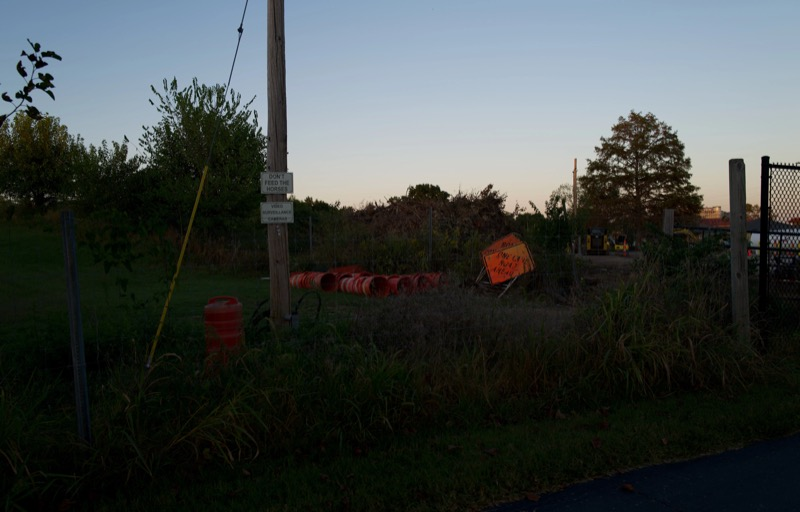
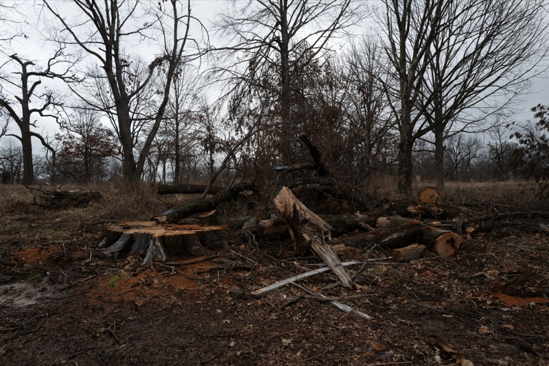
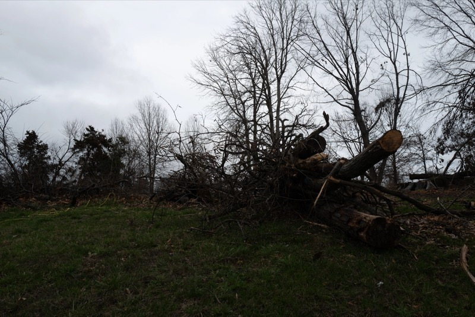
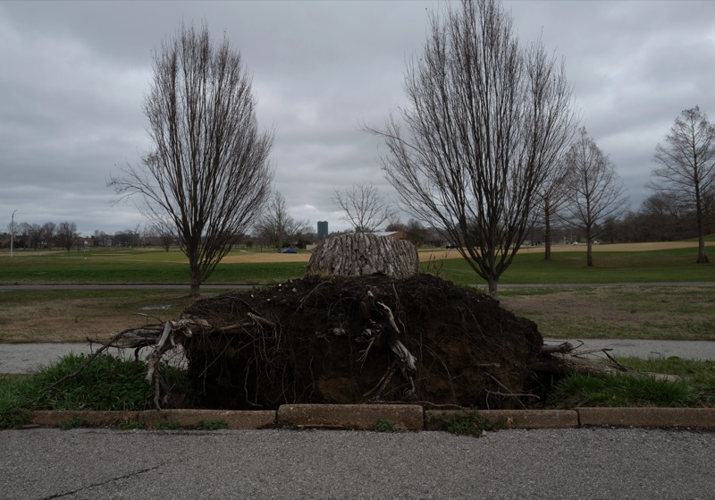
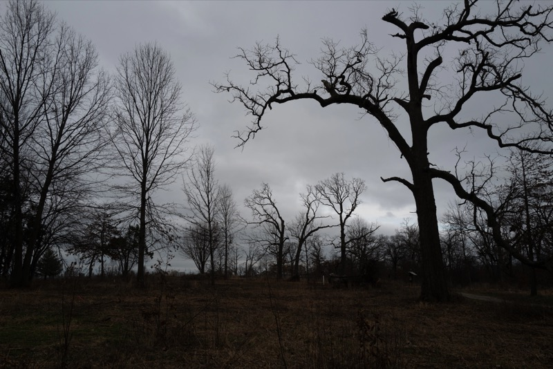
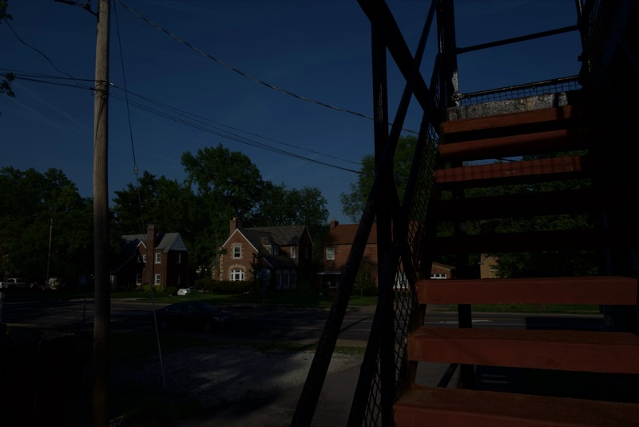
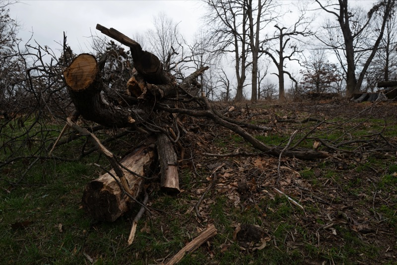
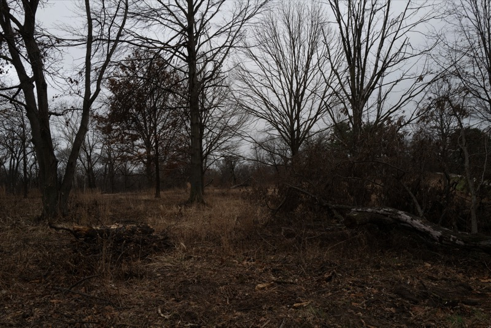

On May 16, 2025, I experienced the tornado in St. Louis, hiding under the Kemper Art Museum. I will never be able to forget its power and the damage it did to the city. There were broken trees on the road and destroyed houses. I saw people come together and carry a tree trunk from the road to fix the traffic. I did not want to document the pain and damage back then because people needed space to grieve. So I decided to document how the city and nature recover from this disaster, and the resilience of its people and the city.
pray 4 me: redveil
Between the Fingers the Drops of Tomorrow's Dawn: Širom
Occam - Hepta 1